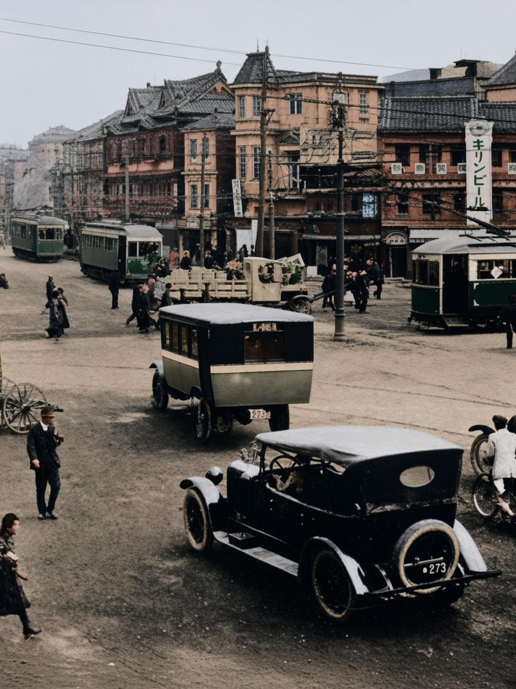
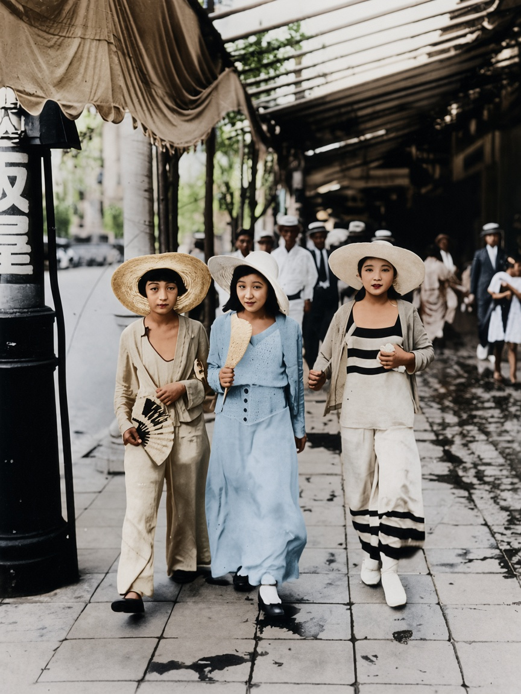
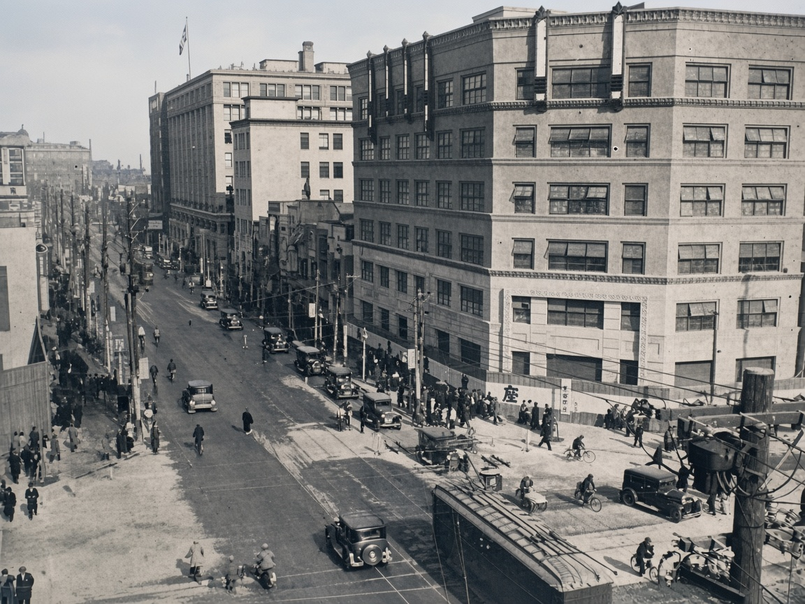
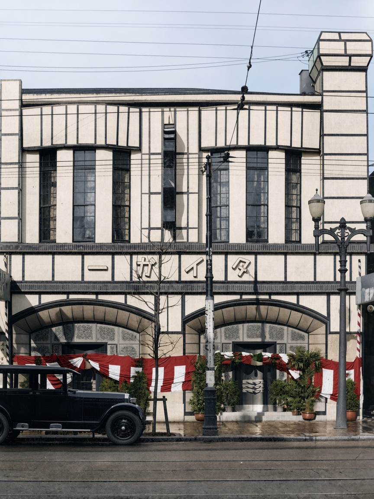
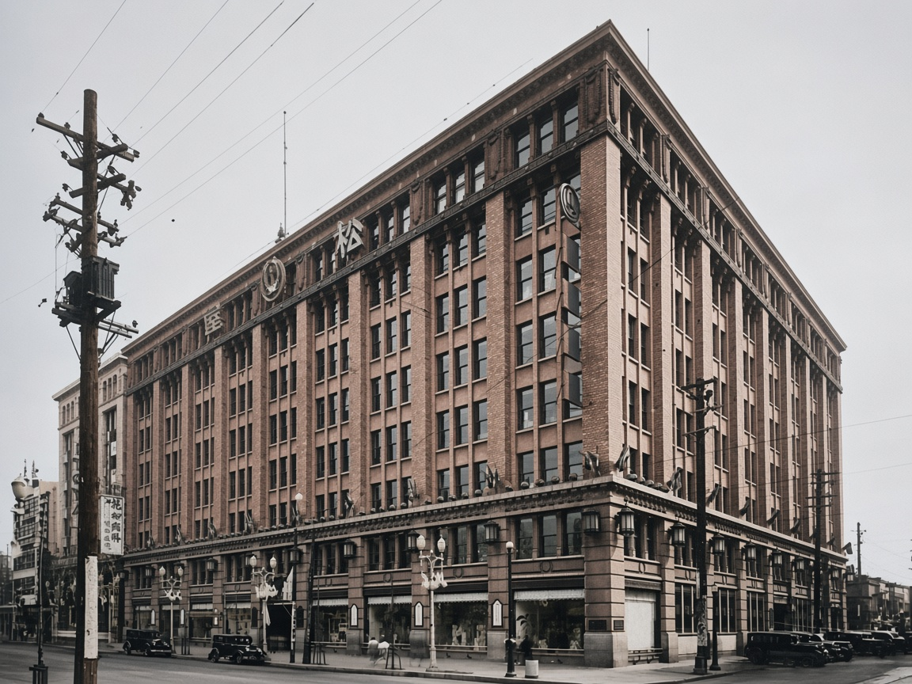
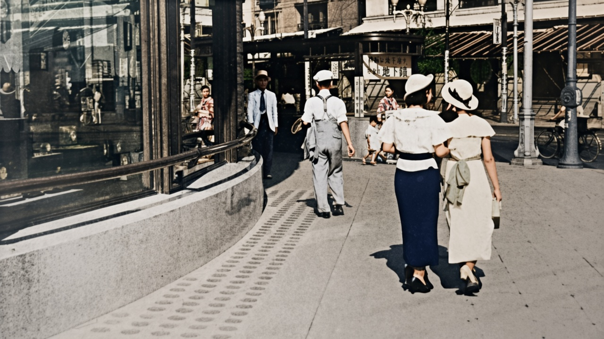
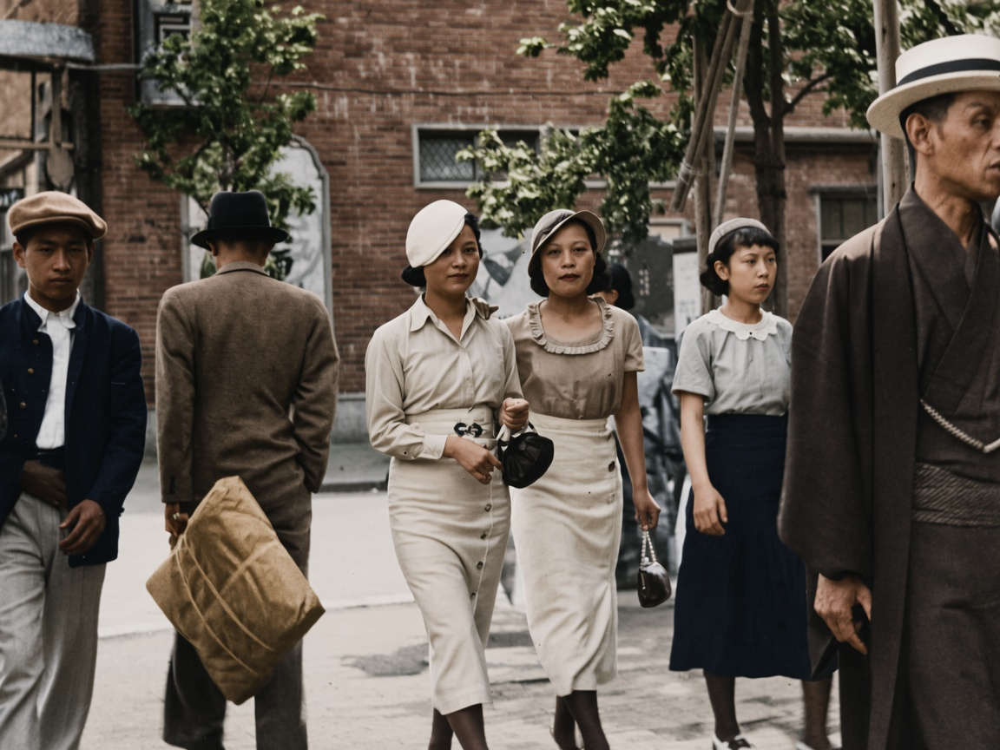
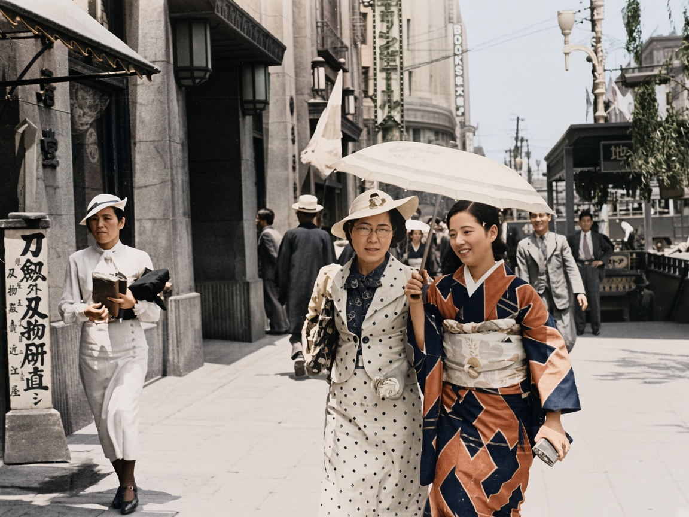

01 · 1923年以前 · 银座
电车还在砖楼前

宽马路正中有电车和两辆箱型汽车。两侧还是两三层的砖楼和木造店屋，骑车的人贴着路边。这是关东大地震以前的银座。
1923年9月1日的火把这一带烧掉。重建以后，下一张的水泥楼才成为银座的街墙。电车涂成深绿是着色时的推定，原片里只看得出深浅。
GINBURA · 1923–1935
地震把砖街烧掉以后，银座换成橱窗、咖啡馆和百货公司。摩登少女就在这条人行道上走路：短发、钟形帽、海滩睡衣，旁边仍有和服。
这一辑八张都是黑白原片，着色按原片上色。衣色是推定。点图放大，每张可切回原片。面孔经上色会偏离底片，不能拿来认人。

01 · 1923年以前 · 银座

宽马路正中有电车和两辆箱型汽车。两侧还是两三层的砖楼和木造店屋，骑车的人贴着路边。这是关东大地震以前的银座。
1923年9月1日的火把这一带烧掉。重建以后，下一张的水泥楼才成为银座的街墙。电车涂成深绿是着色时的推定，原片里只看得出深浅。
02 · 1920年代 · 银座尾张町

从高处望下去，右侧一座转角水泥楼占掉半个画面，窗格子齐整。街心是汽车和自行车，人贴着店铺走。电线把天空切成格子。
尾张町是银座四丁目一带的旧称。地震后的银座不再是砖楼加电车，而是这种能做橱窗的多层街墙。楼身的米色是着色，原片是灰的。
03 · 昭和初年前后 · 银座

一座白墙几何立面：上层竖长窗，下层两个拱。额枋上是「タイガー」。门口挂着红白帷幔和盆栽，左边停一辆深色汽车，地上有电车轨。
Cafe Tiger 1907年开在银座，女侍穿和服外加围裙，是摩登少女出入的咖啡馆。红白帷幔的红色是着色加上的，原片只看得出深色布。
04 · 1925年前后 · 银座松屋

转角一座砖楼，竖向壁柱把立面分成一格一格。底层是橱窗和球形路灯，楼上窗口挂着小旗。屋檐下能辨出「松屋」。
银座松屋 1925年开业，吴服店做成多层百货，橱窗对着人行道。摩登少女买洋服、看玻璃，就在这种楼的一层。
05 · 1935年8月 · 银座

弧形橱窗占住左边。三个女人背对镜头往前走，两顶白帽，一条腰带在身后打结。人行道上有一排圆点防滑。远处是地下铁的招牌和街灯。
「银座散步」日文叫银ぶら：沿着橱窗走，让别人看见自己身上的新东西。这张原片高光很硬，着色把裙子分成深浅，不是当时的染料记录。
06 · 1928年 · 影山光洋
三个年轻女人在拱廊下朝镜头走来。宽檐草帽和白帽，宽松长裤，右边一条黑白横条。中间一位拿着扇子。后面一排戴帽子的男人看着她们。地砖是湿的。
海滩睡衣是当时从海边搬进城里的一套衣服，穿到银座白天的人行道上。这张是摩登少女最常被引用的照片。浅蓝和米色是着色推定。
07 · 约1930年代 · 银座

两个女人走在画面中间，浅色洋装，钟形帽，手里是小手袋。左边男人夹着铺盖包，右边一个穿和服、戴草帽的人被切掉半边。后面是砖墙和树。
摩登少女不是整条街的制服。同一张照片里，洋服、学生服和和服挨在一起。钟形帽和过膝裙是她们被认出来的部分。
08 · 1935年 · Morooka Kōji

三个女人并排。左边白套装、钟形帽，抱着纸包。中间波点洋装、眼镜、阳伞。右边是几何纹样的和服。左边石柱上是磨刀铺的招牌，写着刀剑以外的刃物也研磨。
1935年的银座已经不是1928年那种整套海滩睡衣。洋服和和服可以走在同一块人行道上。波点的黑白、和服的蓝与铁锈红，都是着色时按纹样推定的。